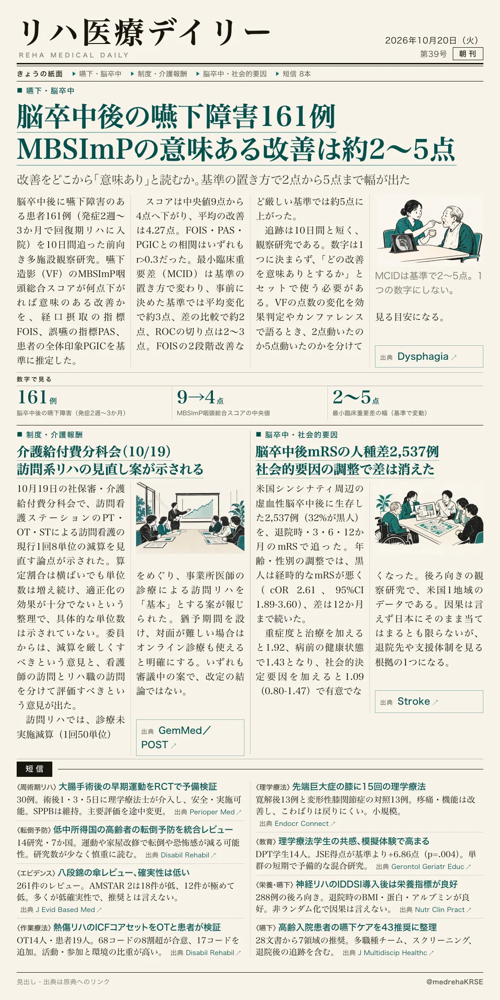
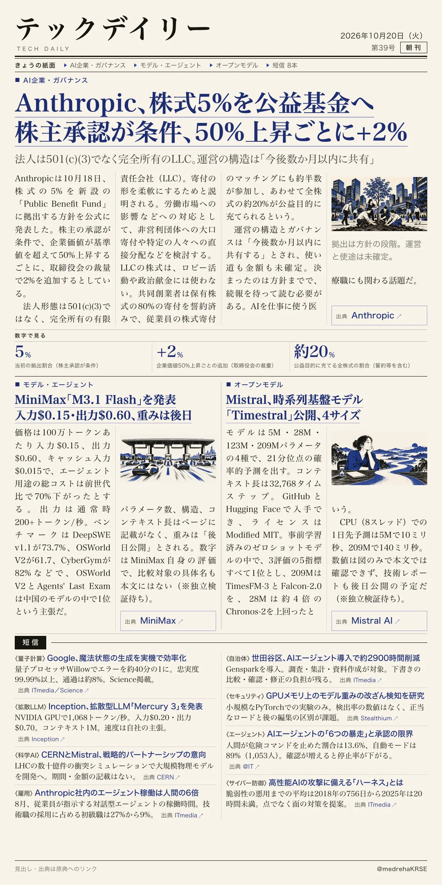

リハ医療デイリー
脳卒中後の嚥下障害161例 MBSImPの意味ある改善は約2〜5点
改善をどこから「意味あり」と読むか。基準の置き方で2点から5点まで幅が出た
回復期リハに入院した脳卒中後の嚥下障害161例を10日間追い、VFのMBSImP咽頭総合スコアの最小臨床重要差を推定した。

テックデイリー
Anthropic、株式5%を公益基金へ株主承認が条件、50%上昇ごとに+2%
法人は501(c)(3)でなく完全所有のLLC。運営の構造は「今後数か月以内に共有」
Anthropicが10月18日、株式の5%を新設のPublic Benefit Fundに拠出する方針を公式に発表した。
